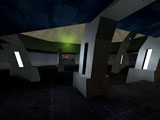

Andrew Tollett. Game Programmer & Systems Designer
Tropical ZS map icon repository

this is just a store of the map icons we use on tropical. if you feel the
burning desire to download them all at once instead of getting served them
as they show up on mapvote here they are